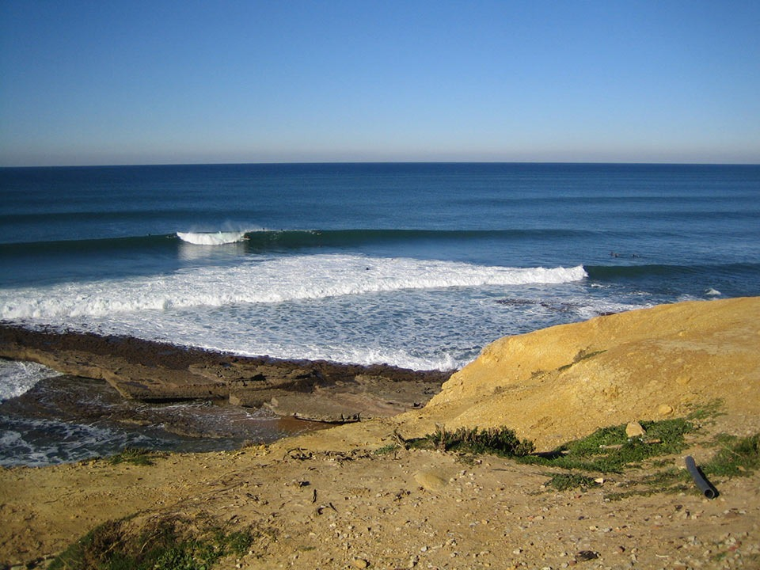

Pedra Branca
A primeira onda que encontramos mesmo em frente ao Camping da Ericeira é a Pedra Branca.Localizada na ponta sul da Praia da Empa, e tem esse nome por causa de uma rocha submersa, com uma tom do que os outros, localizados na zona onde as ondas são normalmente capturadas. É uma esquerda muito rápida de recife inferior que recebe ondulações do quadrante OS para o quadrante W/NO. Devido ao banco raso do recife que fica exposto durante a maré vazia, geralmente é surfado da meia-mar até a maré cheia. Regular e perigosa esta onda Caracteriza-se por uma zona de arranques rápidos, seguida de um tubo para o interior.